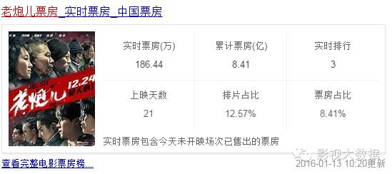

数据君告诉你，哪些90后小鲜肉能给你的电影赚钱
《临时同居》于2014年上映，当时的主演是张家辉、郑秀文，欧豪在里面饰演男配，一个叛逆不羁富帅二代，嘻哈搞怪，表现抢眼。《我就是我》其实就是快男纪录片，最终票房两千万，不知道“火星人”的粉丝贡献了几分之几。还有，2015年的大IP电影《左耳》虽然恶评如潮，但票房还是蛮抢眼滴。



陈炳强的上位更像是一部传奇，这个90年的普通少年，因为被周星驰选中，成了《西游降魔篇》里的猪刚鬣，自此登上大银幕。但是影视之路不太好走，2013年至今，一直没有太大起色。2015年，他就上了一部电影，《笔仙魔咒》，总票房到了1000万就再也动不了了。期待这小伙儿能突破瓶颈，再创高峰。
小伙子这运气真没sei了！2014年3月才正式以歌手身份出道，转年就碰上了《我的少女时代》这样的大片。虽然全片最火的是男主演王大陆，但李玉玺因为角色缘故，还是很受欢迎滴。不负责任滴传话，听说好些制片人都对他印象不错，以后应该能够经常在大银幕上看到他吧。
很多人似乎不太知道姜潮是谁，作为一个演员来说，这是件很悲催的事。《小时代》系列捧红了陈学冬，连带着郭采洁和郭碧婷也为人所熟知了，姜潮演了整个系列，却只沦为布景。看他的大银幕作品，好像除了《小时代》就没什么拿得出手的了。至于小伙儿未来发展如何，大家还是观望再观望吧。
眼看着90后的小鲜肉们要成长为电影票房的主力了，还来不及为80后和85后感伤，95后就已经蹭蹭蹭蹭地冒头了。小鲜肉刘昊然和吴磊2015年在大银幕和小荧屏上都有不俗表现，让人刮目相看。吴磊毕竟目前只在小荧屏活动，我们还是来说说刘昊然吧。
2015年最后一天，刘昊然参演的电影《唐人街探案》上映，白嫩清秀的刘昊然和又土又挫的王宝强搭戏，果然喜剧效果十足。上映才14天，这部电影票房就冲到了6.78亿！2016年，刘昊然小朋友的《最好的我们》将在大银幕上与大家相见，而现在，他不过是中戏校园里的大一新生。小伙子有戏，迷妹看好你哟！

变脸补一句，这群前EXO成员归国后大多发展不错，除了wuli韬韬，wuli韬韬……

人生在世，苦逼的事儿天天有，任你眉头扭成麻花也没啥用。还是来看看美男，开心一下吧。亲爱滴鲜肉、欧巴、妹子们，你们觉得2016年谁的发展势头最好呢？单选！单选！单选！
（迷妹勾搭邮箱：Chloe80@qq.com）